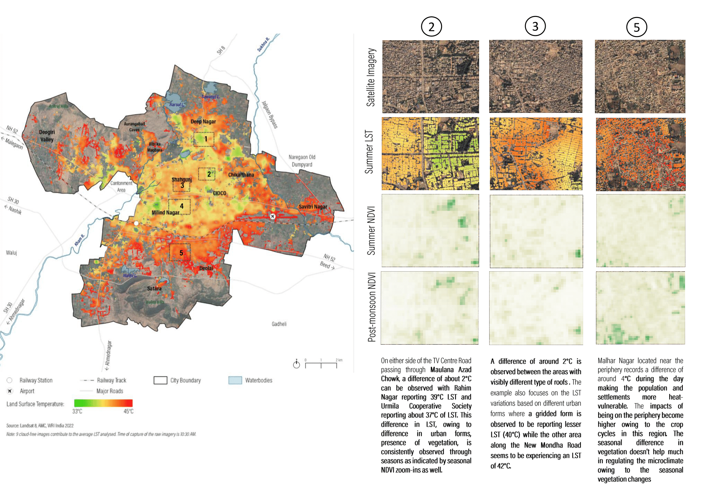

Project Overview
The Aurangabad Climate Action Plan 2024 outlines a strategic roadmap to build a low-carbon, climate-resilient city. It focuses on six key sectors: energy, transport, air quality, waste, water, and green cover. The plan emphasizes inclusive development, targeting vulnerable communities most affected by climate risks. It integrates mitigation and adaptation strategies, including clean mobility, renewable energy, and improved waste systems. While future climate projections indicate rising temperatures and erratic rainfall, the plan prioritizes immediate, actionable steps like urban greening and heat mitigation. It aligns with national and global climate goals, aiming for sustainable urban growth and improved public health.
Project Details
Organization:
World Resources Institute
Role:
Program Associate
Duration:
Mar 2022 - Mar 2023
Tools Used:
- QGIS
- Google Earth Engine
- Python
My Contributions:
- Conducted detailed Urban Heat Island (UHI) analysis using Land Surface Temperature (LST) data to identify heat-vulnerable zones across the city.
- Analyzed climate projections from CMIP5 datasets to assess future temperature trends and inform long-term adaptation strategies.
- Authored the Urban Heat Analysis section of the Climate Action Plan, integrating geospatial insights into actionable policy recommendations.
- Supported the development of spatial datasets and visualizations to communicate climate risks to stakeholders and city officials.
Impact Summary:
This work provided critical spatial intelligence for Chhatrapati Sambhajinagar’s Climate Action Plan, enabling the city to prioritize heat mitigation strategies, urban greening, and infrastructure resilience. The analysis helped shape targeted interventions for vulnerable communities and supported evidence-based climate governance.
Selected Visuals

Night-time land surface temperature in Chhatrapati Sambhajinagar (Aurangabad) district processed using MODIS night-time LST in Google Earth Engine and visualization produced using QGIS
Relationship between land surface temperature and vegetation in Chhatrapati Sambhajinagar (Aurangabad) using Landsat8 processed in Google Earth Engine and visualization using QGIS and MS Powerpoint